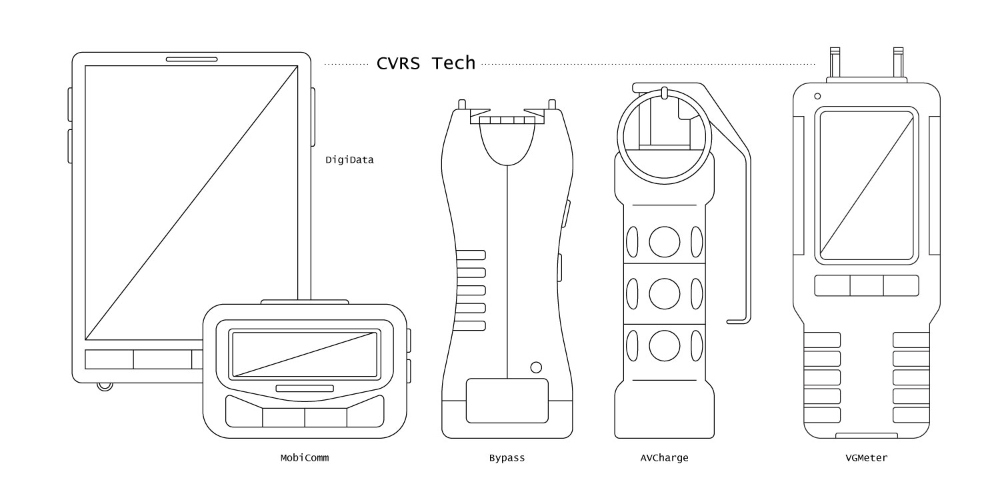

Depending on an agent’s role, they will be supplied with state-of-the-art gear designed to aid in their treatment or research duties. From tablets to advanced Vice combat technology, agents have everything they need to succeed in their career.
Contact Us
For more information, call us at (214) 877-8423 or send an email to info@cvrs.com.
Discover the roles and responsibilities of the many agents that make up the CVRS family. Whether they’re patient-focused or conducting research, our agents are passionate about making a difference.
Upon completion of training, agents are provided an equipment bundle to aid in their duties, further explored below. In addition to the issued equipment bundles, agents are required to visibly display their ID badges at all times while on duty. Agents can choose between displaying their ID with a lanyard, badge reel, or lapel clip. Bags are available upon request to help transport equipment bundles between sites. Agents may choose from a tote bag, small duffel bag, or backpack. Agents with 10 or more years of collective service are presented with a custom embroidered satchel.
Notice
Equipment provided by CVRS must only be used by certified CVRS agents, and unauthorized use may be punishable by up to $2000 in fines.

CVRS Technology
An important part of any agent’s gear kit is the array of gadgets specially designed for agents to more efficiently perform their duties. Our proprietary technology is designed in-house by our Product Engineers, while Product Technicians maintain the software and perform maintenance.
Browse the list below to learn more about our technology:
This information-packed tablet contains both the local and master research databases and is automatically updated to reflect the most recent findings as they are released from the Research Sector. These databases are searchable and support bookmarking and personal annotations. DigiData are great for refreshing the fundamentals, receiving timely research findings, and logging observations.
All agents are issued a DigiData at the start of their respective training courses.
MobiComm (Mobile Communications)
Similar in appearance and function to a pager, this communication tool allows agents to communicate with each other, request backup, and log findings. A unique shorthand communication style is used to send messages with a MobiComm, and an agent must pass a written exam in order to be issued this device as well as regularly pass recurring exams to stay up to date with the expanding vocabulary.
While agents can and do often use their MobiComm for daily communication, where our proprietary technology sets itself apart from a standard pager is in the Branch Domain. Agents are able to send communications to each other and log observations inside the domain, though if an agent chooses to communicate with someone outside of the metaphysical realm, there can be a delay of anywhere from 8 to 12 minutes of in-Branch time. Due to this delay, MobiComm have a built-in distress signal that reduces the delay to roughly 4 minutes of in-Branch time.
Many agents also use their MobiComm to log case-relevant observations inside the Branch Domain that are eventually reviewed by their local team of Report Coordinators and Forecast Specialists. Due to the unique nature of a pseudo Adjunct’s connection, they are able to log their observations in the corporeal realm, but an extreme shorthand is used to accommodate for the time difference. In the case of Solutions Architects—who need to communicate with Branch Administrators and other agents in the Branch Domain—this shorthand is crucial to agents receiving timely updates. Recipients in the Branch Domain are notified of an incoming communication as soon as the Solutions Architect begins constructing the message and will begin to receive small chunks of text in 30-second increments until the transmission is complete.
Upon completion of training, the following agents are given a MobiComm:
Branch Administrator
Branch Coordinator
Solutions Architect
Branch Recovery Specialist
Target Hunter
Vice Management Administrator
Vice Management Coordinator
Record Proctor
Blight Specialist
AV Specialist
Branch Proctor
Intake Coordinator
Floor Manager
Traffic Coordinator
Research Proctor
Vice Analyst
Branch Analyst
Behavioral Analyst
Exposure Analyst
Sector Advocate
Bypass
This device allows an agent to force their way into an active Branch as an Adjunct, with a success rate of about 72%. Bypasses are similar in appearance to tasers and interact with the Vice’s network in one of two ways, depending on the intended action. While Bypasses are most commonly used to force entry into an active Branch, they can also be used to instigate a Branch in an emergency.
A Vice’s network is comprised of hundreds of tracks, which are densely-packed collections of vitiumnexum (VN) that transport hormones and VG throughout the Host’s body. In their default state, VN are neutrally charged, but become positively charged once a Branch is initiated. A Bypass takes advantage of this by directing a line of positively-charged electricity toward any stray tracks in the network. If a Branch is active, the electricity creates a “bridge” of contact that allows the agent to enter the Branch without having been queued or initially making physical touch. If a Branch is not active, the jolt of positively-charged electricity triggers the VN to swap their charge, resulting in an initiated Branch.
These devices are often used in conjunction with Parsing Goggles to help scope out potential tracks. After certification, agents are provided a set of three and advised to use sparingly. A Bypass can be used up to six times before it loses its electrical charge, after which they cannot be recharged and must be discarded. Request for new kits are subject to denial if the supervisor suspects abuse. More can be learned about this process in the Vice Research Compendium under Forcing Entry.
Upon completion of training, the following agents are given a set of three Bypasses:
Branch Administrator
Branch Coordinator
Solutions Architect
Target Hunter
Vice Management Administrator
Vice Management Coordinator
Floor Manager
Research Proctor (modified)
Vice Analyst (modified)
Branch Analyst (modified)
Behavioral Analyst (modified)
Exposure Analyst (modified)
Risk of Kickback
As previously stated, Bypasses have a success rate of only 72%. The failed 28% results in a phenomenon known as a “kickback” where if the charge is rejected, it can travel back up its original path and overload the Bypass, resulting in a burst of AV that can “sear” the agent’s skin if not protected. However, even if Summoning Gloves are worn, they are often overloaded by the kickback and can still result in skin damage.
Kickbacks can result from both forced entry and Branch instigation. The circumstances that result in kickback vary between Vices, and our experts currently posit that an agent’s constitution also plays a minor role in successful connections. Vices with denser, more complex networks tend to result in kickbacks more often than younger networks. Because an agent’s constitution is relatively difficult to measure, this theory is currently being investigated.
Unfortunately at this time, kickbacks are a known risk that agents take when using a Bypass. Our Product Engineers and Technicians are hard at work devising a solution for this issue. Because of this risk, our trainings focus on preparing agents to think quickly under pressure and avoid using a Bypass unless absolutely necessary.
Modifications
Solutions Architects and Observation agents are provided a modified Bypass upon completion of training. Modifications are made to the intensity of the electrical charge, so that rather than “matching” the voltage of a Vice’s tracks, they are slightly weaker. This allows agents to join active Branches as pseudo Adjuncts and log observations as analysts, or in the case of Solutions Architects, communicate with and provide guidance for the agents in the Branch Domain. Modified Bypasses cannot instigate Branches, as the charge is not strong enough, and these agents have no need to do so. Additionally, their lower charges greatly reduce the risk of kickback to be around roughly 7%. Learn more about pseudo Adjuncts and their effects on Branches in The Role of Adjuncts.
AV Charge
These AV-packed, flashbang-adjacent explosives are used for large-scale Branch site cleanup. AV Charges are able to address sites of all sizes and severity, ranging anywhere from standard, clean commits to gruesome suspensions. They quickly neutralize large concentrations of VG and perform most efficiently in a closed space, such as a small building or room. When the AV is discharged, the explosion is extremely bright and loud. Those nearby may suffer temporarily blindness if observed directly, or hearing loss if hearing protection was not used.
While AV, in small amounts, cannot harm us, large, sudden influxes can “sear” unprotected skin, resulting in moderate burns. AV does not tend to interact with inanimate objects, but plants, animals, and people can be affected if they are too close to the discharge site. AV Charges should only be used after the area has been cleared of civilians, patients and unnecessary personnel.
Upon completion of training, the following agents are given a set of six AV Charges:
Branch Administrator
Branch Coordinator
Branch Recovery Specialist
Target Hunter
VG Meter
This handheld device, similar in appearance to a moisture meter, has two small probes that detect VG. These meters have two distinct modes for specialized purposes: Detect and Quantify. In both of these modes, the area of focus can be narrowed or widened depending on the intent.
Detect Mode is extremely quick and is used exclusively in the VGDS (Vitiumglomerorum Detection Screening) process with new patients. The VG Meter simply emits a high-pitched tone if the area its probes are pointing to have a VG concentration high enough to suggest the presence of a Vice core. The area of focus is typically quite narrow, expanding no more than a few inches.
Quantify Mode, on the other hand, is used for both environmental monitoring (Branch site cleanups) and regular management scans for patients—called VGMS (Vitiumglomerorum Management Scans)—which are administered by Record Proctors. In this mode, the meter displays the fluctuating VG concentration in real time, with a slightly delay, as the probes move through space. In VGMS administration, the area of focus is quite narrow, much like in Detect Mode, while environmental monitoring requires a much larger area of focus, spanning anywhere from a few feet to multiple meters. VG Meters are typically used in conjunction with Parsing Goggles, which initially visualize the VG concentration, while the VG Meter quantifies the severity of the concentration.
In Quantify Mode, VG concentration is presented on a scale of 0 to 10, with 10 being so solid that the concentration is opaque and tangible. The standard reading for indoors is roughly 3.5, while outside tends to hover around 1.3. Cause for concern begins around roughly 6.5, when the concentration starts becoming visible. Active rumina typically hover around 8.3.
Upon completion of training, the following agents are given a VG Meter.
Branch Administrator
Branch Coordinator
Branch Recovery Specialist
Target Hunter
Record Proctor
Blight Specialist
CVRS Gear
While every agent is expected to wear their designated uniform, some roles require additional gear that has been specially designed to help agents perform their duties. Designed by a team of Textile Engineers, these articles mimic traditional clothing many are familiar with, but are lined with our proprietary textile technology that either enhances an agent’s natural connection to their AV source or allows us to see even small concentrations of VG.
Browse the list below to learn more about our gear:
These goggles have polarized, treated glass that allows agents to observe VG, the spore-like particles emitted by Vices previously invisible to the human eye in small amounts. While this eyewear has branched out into multiple styles over the years, they are always recognized by their trademark orange tint. This eyewear can be used to observe a Vice’s network and monitor VG distribution in the surrounding environment.
Parsing Goggles are often used in conjunction with a Bypass to aid in locating stray tracks to use in either Branch instigation or forcing entry into an active Branch. Note that some Vices are part of a unique subclass and are able to camouflage their networks to avoid detection, requiring the use of a VG Meter to monitor VG levels.
Parsing Goggles come in an array of styles to accommodate an agent’s role. Upon training completion, agents may choose a style from the options below that best supports their expected duties. Throughout an agent’s career, they will be able to request new styles if their current style is not serving them. The available style categories are as follows:
Standard Eyewear: Existing prescription lenses and bifocals can be enhanced to include the coating found in CVRS-issued eyewear. This option is used most commonly by Primary Care and Observation agents.
Sunglasses: Standard sunglasses styles, such as aviators or wayfarers, are available for agents who are outdoors often, partiucularly Public Deployment agents, to avoid doubling-up eyewear
Safety Glasses: Styles range from standard eyewear with side-shields to single-lens wrap-arounds. This option is used primarily by agents who see a lot of action in the Branch Domain, such as Branch Administrators.
Goggles: Styles include both cup and cover goggles, many models drawing inspiration from lab equipment. Research agents, Blight Specialists and AV Specialists tend to prefer this style.
Upon completion of training, the following agents are given a pair of Parsing Goggles.
Branch Administrator
Branch Coordinator
Solutions Architect
Branch Recovery Specialist
Target Hunter
Vice Management Administrator
Vice Management Coordinator
Record Proctor
Blight Specialist
AV Specialist
Branch Proctor
Intake Coordinator
Floor Manager
Traffic Coordinator
Research Proctor
Vice Analyst
Branch Analyst
Behavioral Analyst
Exposure Analyst
Summoning Gloves
These gloves allow for expedited patch summoning and aid in Branch cleanup due to their charged, AV-infused palms. Styles typically resemble sleek motorcycle gloves with a thick, textured lining on the palm, but they can vary to accommodate different patches and agent roles.
The textured palms improve an agent’s grip on a summoned patch, and the burst of AV from the palm can bolster a patch’s makeup outside of a Branch where structural instabilities are common. Summoning Gloves should be brought back for recharging after repeated use.
Much like Parsing Goggles, Summoning Gloves come in different styles to accommodate agents’ varying needs. Different styles have different perks, and while some styles may be more common for certain roles, it is ultimately up to the agent to decide which style best suites them. Such styles include:
Surgical Gloves: Agents in both Primary Care and Urgent Care tend to prefer this style, as repeated contact between bare skin and patients’ blights can lead to skin damage over time. Their full coverage and slim silhouette make for a popular choice.
Fingerless Gloves: This style is preferred by agents who see a lot of action in the Branch Domain, such as Branch Administrators. Many agents who have Suspension Training also prefer this style, as their structured, palm-focused style makes for easier, more efficient patch summoning when under pressure. Their slim design allows for full dexterity.
Riding Gloves: Agents who appreciate the perks of fingerless gloves but need more coverage to wield larger or more complex patches may prefer this design, as the AV-infused area extends from the palm and runs along the fingers.
Work Gloves: Branch Recovery Specialists and agents in Public Deployment prefer this style to aid in Branch site cleanup, as their bulky design and larger surface area increase the AV output and make for quick cleanup.
Upon completion of training, the following agents are given a pair of Summoning Gloves.
Branch Administrator
Branch Coordinator
Branch Recovery Specialist
Target Hunter
Vice Management Administrator
Vice Management Coordinator
Floor Manager
Traffic Coordinator
Cleansing Boots
Similar to Summoning Gloves, these steel-toed work boots have soles lined with AV. They are used primarily for Branch cleanup, but can also be deployed as a last-resort means of defense within the Branch Domain.
The AV-charged soles make for speedy, efficient, and sanitary Branch cleanup, neutralizing and destroying sites littered with VG. Cleansing boots are activated by tapping the steel toe against the ground three times in quick succession, and can be deactivated by doing the same. Cleansing Boots are typically replaced every two years or as the tread wears down. Because the technology is more complex, Cleansing Boots only come in one style.
Upon completion of training, the following agents are given a pair of Cleansing Boots.
Branch Administrator
Branch Coordinator
Branch Recovery Specialist
Target Hunter
Join our Team
Interested in a CVRS Career?
If you’re passionate about community impact and thrive in a fast-paced environment, you’ll fit right in. Learn how to apply and get an overview of what will be expected of you as an agent.